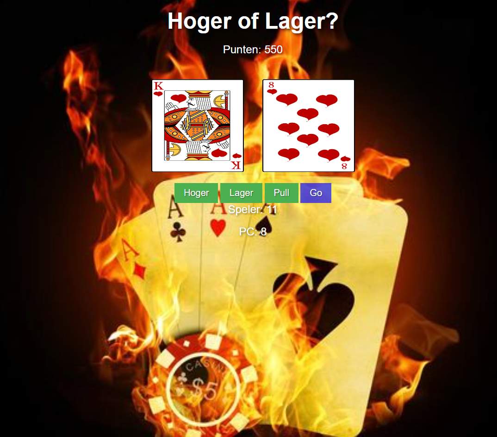
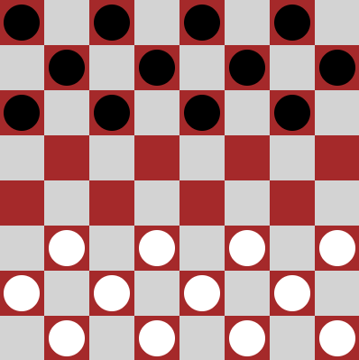
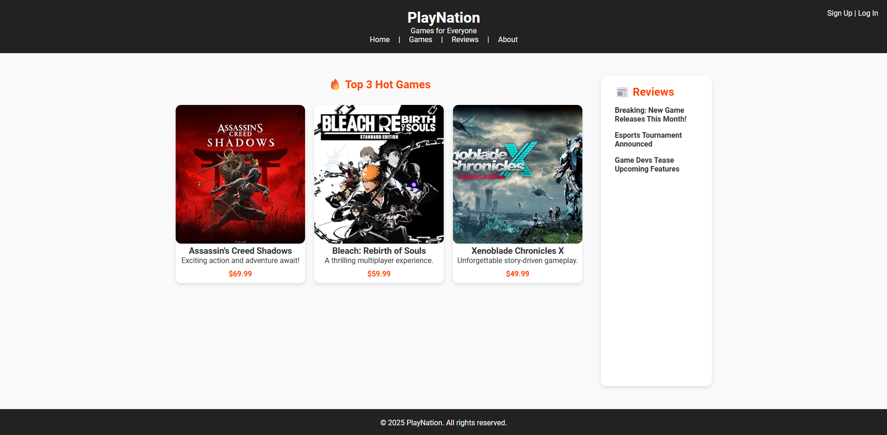
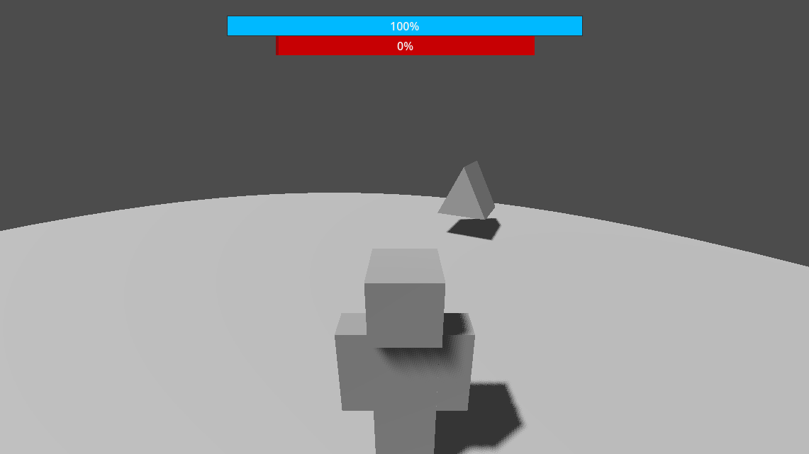

Portfolio
Mijn Projecten

Project 1: Hoger Lager
Voor mijn eerste schoolproject heb ik een Hoger of Lager-spel ontwikkeld. Het doel van dit project was om mijn vaardigheden in programmeren en logisch denken te verbeteren. Het spel werkt door een getal te raden dat door de computer wordt gekozen, waarbij de speler telkens kan raden of het volgende getal hoger of lager is dan het vorige getal. Tijdens dit project leerde ik werken met basisprincipes van coderen, zoals het gebruiken van for-loops, conditionals (zoals if-statements) en random getallen. Het was een leuke manier om mijn kennis van de programmeertaal verder uit te breiden en een werkend project te creëren dat zowel functioneel als plezierig was om te spelen. Ik ben trots op de vooruitgang die ik heb geboekt en kijk uit naar het verbeteren van mijn vaardigheden in de toekomst.
- Talen: HTML, CSS, JavaScript
- Tools: Visual Studio Code

Project 2: Build your Game
Voor dit project heb ik een damspel ontwikkeld waarbij ik de klassieke regels van het bordspel combineer met verschillende speelmogelijkheden. Ik heb de logica voor de spelmodi geprogrammeerd en ervoor gezorgd dat spelers de klassieke damervaring kunnen beleven. Dit project heeft niet alleen mijn programmeervaardigheden verbeterd, maar ook mijn inzicht verdiept in het efficiënt implementeren van game mechanics. Ik ben tevreden met het resultaat en zie mogelijkheden om het spel verder uit te breiden met nieuwe functies en optimalisaties.
- Talen: HTML, CSS, JavaScript
- Tools: Visual Studio Code

Project 3: Review your Experience
In dit project heb ik een website ontwikkeld met behulp van PHP en PHPStorm. Ik heb gebruikgemaakt van een database die ik heb opgezet met XAMPP, waarbij ik MySQL Admin en Apache heb gebruikt om een lokale server te draaien. De website maakt verbinding met de database om gegevens op te halen en op te slaan. Het doel van de website is om bezoekers de mogelijkheid te geven hun ervaringen en reviews te plaatsen, die vervolgens worden opgeslagen in de database. Dit project heeft me geholpen om mijn kennis van backend-ontwikkeling en databasebeheer verder te verfijnen. Ik ben momenteel bezig met het verbeteren van de gebruiksvriendelijkheid en het toevoegen van nieuwe functionaliteiten.
- Talen: PHP, HTML, CSS
- Tools: PhpStorm, XAMPP

Project 4: Ashura's Battle Arena
Ashura's Battle Arena is een vechtspel dat ik sinds januari aan het ontwikkelen ben. Het spel is nog in de uitwerkingsfase. Ik gebruik GDScript en werk met Godot als game-engine. Daarnaast heb ik ervaring opgedaan met Blender voor 3D-modellen en animaties. Dit project helpt me om zowel mijn vaardigheden in game development als in het creëren van interactieve, grafisch intensieve omgevingen verder te ontwikkelen. Ik ben enthousiast over de voortgang van dit project en kijk uit naar de toekomstige uitbreidingen en verbeteringen.
- Talen: GDScript
- Tools: Godot, Blender